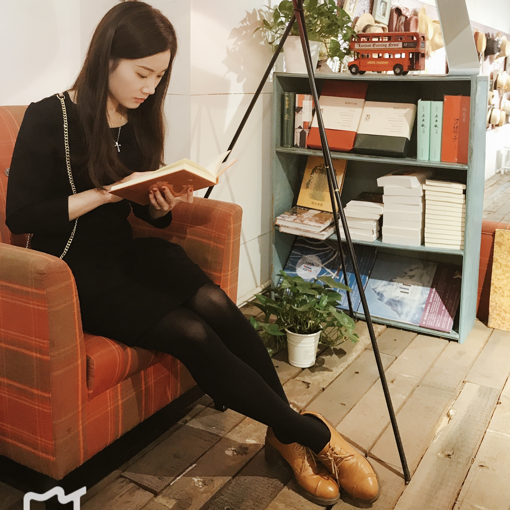

Welcome to Yuewen's homepage! I am currently a Postdoc Researcher at MBZUAI & CMU, working with Prof. Kun Zhang.
I obtained my Ph.D. degree in Control Science and Engineering from Southeast University.
My research interests lie in reinforcement learning, causal discovery, and representation learning.
Feel free to email me yuewen.sun@mbzuai.ac.ae, and find me elsewhere: Twitter, LinkedIn, OpenReview, Google Scholar